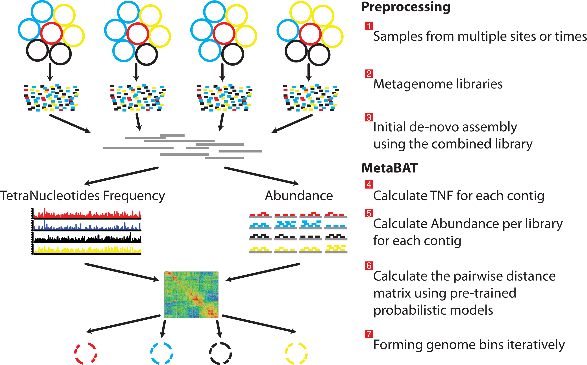

Genomas a partir de metagenomas
La metagenómica hace referencia a todo el ADN de los organismos que se encuentran en un ambiente. La secuenciación de este material genético produce lecturas que pueden ensamblarse para conocer la diversidad microbiana y sus funciones.
Típicamente los metagenomas pueden estudiarse mediante dos aproximaciones:
- La clasificación taxonómica de contigs o lecturas y la inferencia metabólica de los contigs.
- La reconstrucción de genomasa a partir de metagenomas (MAGs), clasificación taxonómica y la inferencia metabólica de los MAGs.
En este apartado nos enfocaremos en la segunda aproximación. Los MAGs se reconstruyen a partir de un ensamble metagenómico, los contigs de dicho ensamble se agrupan mediante la información de cobertura y frecuencia de tetranucleótidos. Esta agrupación puede generar errores, por lo que es indispensable evaluar la calidad de los MAGs mediante la completitud y redundancia de genes de copia única (MerenLab y col.)
Para obtener MAGs podemos seguir el siguiente flujo de análisis:
Binning
En la sección anterior aprendimos como evaluar la calidad, filtrar las lecturas y a ensamblarlas, por lo que este apartado comenzará con el ensamble ya generado.
De acuerdo con el flujo de análisis (Figura 2), debemos partir de un ensamble y mapear las lecturas a dicho ensamble para obtener un archivo de profundidad de cada contig en el ensamble.
El proceso de mapeo es demandante en tiempo de ejecución y recursos. Así que nos dimos a la tarea de generar el archivo de profundidad para comenzar directamente con el binning.
Para generar este archivo se utilizaron las siguientes lineas de código.
# Formatear el ensamble
bowtie2-build results/02.ensambles/megahit/48hrs/48hrs.fasta results/03.profundidad/48hrs --threads 40
# Mapear las lecturas contra el ensamble
bowtie2 -x results/03.profundidad/48hrs -1 data/48hrs_sm_R1.fastq -2 data/48hrs_sm_R2.fastq -p 40 -S results/03.profundidad/48hrs.sam
# Convertir de SAM a BAM y ordenar
samtools view -Sb -O BAM -@ 40 results/03.profundidad/48hrs.sam | samtools sort -@ 40 -o results/03.profundidad/48hrs_sorted.bam
# Obtener el índice
samtools index results/03.profundidad/48hrs_sorted.bam
# jgi
#Obtener el archivo de profundidad de cada contig
jgi_summarize_bam_contig_depths --outputDepth results/03.profundidad/48hrs.mgh_depth.txt results/03.profundidad/48hrs_sorted.bamNo las ejecutes, sólo son un ejemplo para que las puedas usar con tus propios datos en el futuro.
Metabat2
Metabat2 es una herramienta que agrupa los contigs tomando la cobertura de cada contig y calcula su composición nucleotídica.
Para correr metabat necesitamos activar el ambiente conda donde se aloja.
betterlab
conda activate binning

Ahora que ya tenemos el ambiente activado ejecutemos la siguiente linea:
metabat2 -i results/02.ensambles/48hrs.fasta -a results/03.profundidad/48hrs.mgh_depth.txt -o results/04.metabat/metabat -t 4 -m 1500- ¿Cuántos bins se formaron?
2. ¿Qué parámetros cambiarías o agregarías?
ls results/04.metabat/metabat2 –-help
Ya que corrimos Metabat2 vamos a ejecutar MaxBin2, pero primero necesitamos desactivar el ambiente:
Para desactivar el ambiente debemos correr la siguiente linea:
conda deactivateMaxBin2
MaxBin2 agrupa los contigs de acuerdo a la información de cobertura, composición nucleotídica y genes de marcadores de copia única.
Vamos a ejecutarlo, activemos el ambiente conda para maxbin.
betterlab
conda activate metagenomics
Crea el directorio para los resultados de MaxBin2
mkdir -p results/05.maxbinAhora si, vamos a ejecutarlo.
run_MaxBin.pl -thread 4 -min_contig_length 1500 -contig results/02.ensambles/48hrs.fasta -out results/05.maxbin/48hrs_maxbin -abund results/03.profundidad/48hrs.mgh_depth.txt1. ¿Cuántos bins se formaron?
2. ¿Qué porcentaje de completitud y contaminación tienen??
ls results/05.maxbin/*.fasta | wc -lcat results/05.maxbin/48hrs_maxbin.summary | column -t
conda deactivateVamb
VAMB utiliza una combinación de enfoques de aprendizaje profundo y técnicas de agrupamiento basándose en sus patrones de composición de nucleótidos y en la co-ocurrencia de sus frecuencias de cobertura.
betterlab
conda activate binning
Vamos a correr vamb, pero primero crea el directorio de resultados
mkdir -p results/06.vambEjecutemos vamb:
vamb --fasta results/02.ensambles/48hrs.fasta --jgi results/03.profundidad/48hrs.mgh_depth.txt --minfasta 500000 --outdir results/06.vamb/48hrsSi quisieras recuperar los genomas de virus ¿Qué parámetro cambiarías?
Despliega la ayuda:
vamb -hRecientemente se publicó COMEBin, que utiliza un enfoque distinto a lo que hemos usado en este tutorial. En el siguiente link encontrarás el manual y una explicación general sobre su funcionamiento.
Refinamiento
Ya corrimos tres programas de binning, pero, recordemos que los agrupamientos pueden tener errores:
Para disminuir la contaminación e incrementar la completitud hay algunos programas que pueden ayudarnos.
Binning_refiner
Binning_refiner se enfoca en refinar y fusionar los bins para mejorar la integridad y reducir la contaminación. Identifica bins que pueden representar el mismo genoma y los fusiona. Después elimina posibles contaminaciones, durante el proceso Binning_refiner evalúa la calidad de los bins.
Necesitamos crear el directorio de resultados para binning_refiner y un directorio con los bins generados por cada programa
mkdir -p results/07.binning_refiner/48hrsbins/{metabat,maxbin,vamb,dastool}Ahora vamos a crear ligas simbólicas de los bins generados por cada herramienta.
#metabat
cd results/07.binning_refiner/48hrsbins/metabat/
ln -s ../../../04.metabat/*.fa .
#maxbin
cd ../maxbin/
ln -s ../../../05.maxbin/*.fasta .
# vamb
cd ../vamb/
ln -s ../../../06.vamb/48hrs/bins/*.fna .
#regresar
cd ../../Ahora si, corramos Binning_refiner
Binning_refiner -i 48hrsbins/ -p 48hrs -plotY regresemos a nuestro directorio principal
cd && cd taller_metagenomica_pozol/Exploremos los resultados!
cat results/07.binning_refiner/48hrs_Binning_refiner_outputs/48hrs_sources_and_length.txtRefined_bin Size(Kbp) Source
48hrs_1 1535.49 48hrs_maxbin.004.fasta,metabat.5.fa,676.fna
48hrs_2 1506.01 48hrs_maxbin.002.fasta,metabat.3.fa,6952.fna
48hrs_3 1319.12 48hrs_maxbin.008.fasta,metabat.2.fa,28067.fna
48hrs_4 1263.79 48hrs_maxbin.005.fasta,metabat.9.fa,3736.fna
48hrs_5 1185.25 48hrs_maxbin.001.fasta,metabat.11.fa,15732.fna
48hrs_6 1052.67 48hrs_maxbin.003.fasta,metabat.4.fa,15732.fna
48hrs_7 557.49 48hrs_maxbin.006.fasta,metabat.1.fa,28990.fnaAbre el archivo src/sankey.R o copia y pega este contenido en la consola de Rscript
# Cargar las librerias
library(dplyr)
library(networkD3)
# Cargar los datos
sankey_data <- read.csv("results/08.binning_refiner/48hrs_Binning_refiner_outputs/48hrs_sankey.csv")
# Crear una lista de nodos únicos
nodes <- data.frame(name = unique(c(sankey_data$C1, sankey_data$C2)))
# Crear el dataframe de enlaces
links <- sankey_data %>%
mutate(source = match(C1, nodes$name) - 1,
target = match(C2, nodes$name) - 1,
value = Length_Kbp) %>%
select(source, target, value)
# Crear el gráfico Sankey
sankey_plot <- sankeyNetwork(Links = links, Nodes = nodes,
Source = "source", Target = "target",
Value = "value", NodeID = "name",
fontSize = 12, nodeWidth = 30)
# Mostrar el gráfico
sankey_plot
# Guardar
library(htmlwidgets)
saveWidget(sankey_plot, file = "48hrs_sankey_plot.html")DASTool
DASTool es una herramienta utilizada para mejorar la calidad de los bins. Evalúa la integridad, combina los resultados de diferentes bineadores y por consenso selecciona los mejores bins de cada herramienta. Una vez que DASTool ha seleccionado los mejores bins, realiza un proceso de refinamiento para optimizar los resultados.

Vamos a correr DASTool …
Primero crea el directorio para los resultados
mkdir -p results/08.dastoolDASTool necesita como entrada un archivo tabular con información de los resultados de cada programa de binning.
Fasta_to_Contig2Bin.sh -i results/04.metabat/ -e fa > results/08.dastool/48hrs_metabat.dastool.tsv
Fasta_to_Contig2Bin.sh -i results/05.maxbin/ -e fasta > results/08.dastool/48hrs_maxbin.dastool.tsv
Fasta_to_Contig2Bin.sh -i results/06.vamb/48hrs/bins/ -e fna > results/08.dastool/48hrs_vamb.dastool.tsv
Fasta_to_Contig2Bin.sh -i results/07.binning_refiner/48hrs_Binning_refiner_outputs/48hrs_refined_bins/ -e fasta > results/08.dastool/48hrs_binningrefined.dastool.tsvYa que tenemos los archivos tsv podemos empezar con el refinamiento!! ü•≥
DAS_Tool -i results/08.dastool/48hrs_metabat.dastool.tsv,results/08.dastool/48hrs_maxbin.dastool.tsv,results/08.dastool/48hrs_vamb.dastool.tsv,results/08.dastool/48hrs_binningrefined.dastool.tsv -l metabat,maxbin,vamb,binning_refined -c results/02.ensambles/48hrs.fasta -o results/08.dastool/48hrs -t 4 --write_binsDereplicación
dRep
La desreplicación es el proceso de identificar conjuntos de genomas que son “iguales” en una lista de genomas y eliminar todos los genomas excepto el “mejor” de cada conjunto redundante. dRep es una herramienta útil para el proceso de desreplicación
mkdir -p results/09.drep/binscd results/09.drep/bins/for i in $(ls ../../08.dastool/48hrs_DASTool_bins/*.fa) ; do name=$(basename $i .fa); cp $i $name".fasta" ; done
cp ../../07.binning_refiner/48hrs_Binning_refiner_outputs/48hrs_refined_bins/*.fasta .cd && cd taller_metagenomica_pozol/Solo para probar el curso
conda update pandas
conda install bioconda::mash
conda install bioconda::mummer
conda install -c conda-forge gsl=2.7=he838d99_0export PATH=/miniconda3/envs/metagenomics/bin:$PATH
dRep dereplicate results/09.drep/ -d -comp 50 -con 10 --SkipSecondary -g results/09.drep/bins/*.fasta
conda deactivate